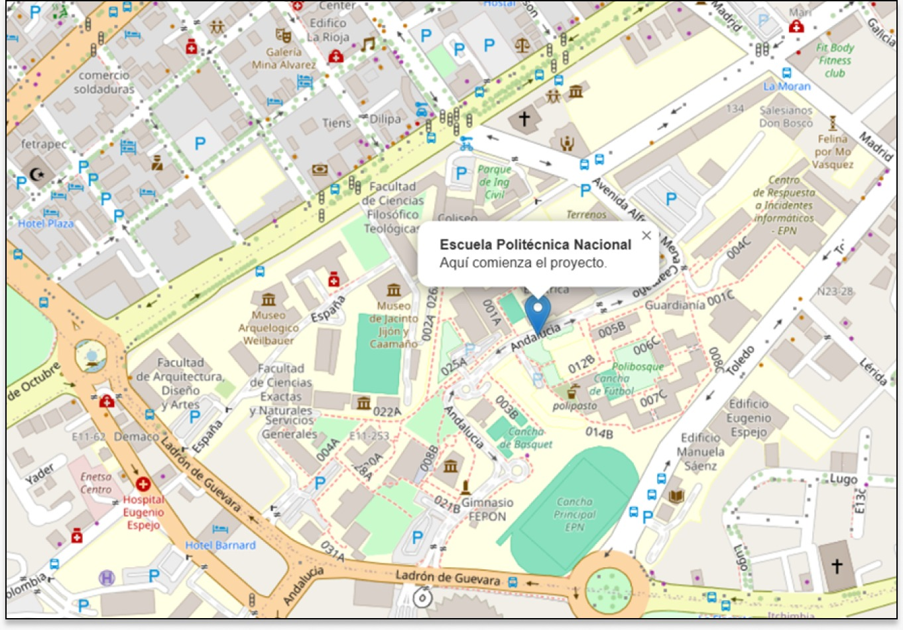

Maps
Maps
¿Es tu primer día en la ESFOT y no sabes por dónde empezar?
Te ayudamos a ubicarte, conocer la ESFOT, encontrar tus salones y sentirte parte de esta nueva etapa. Aquí tienes todo lo que necesitas para empezar con confianza.
